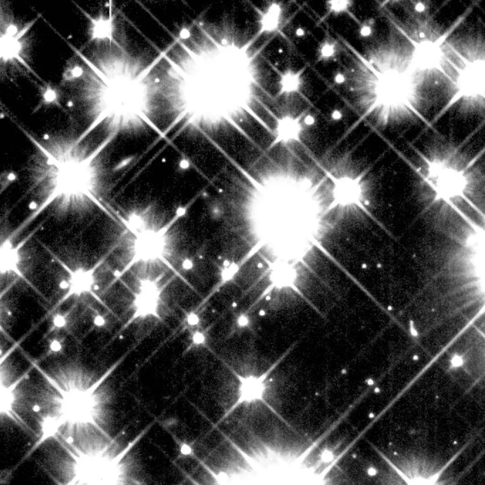
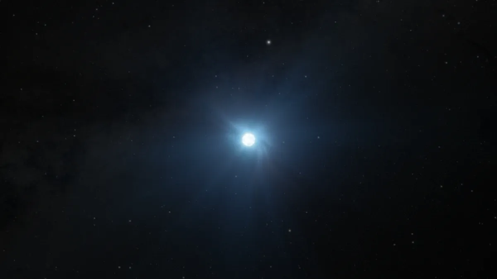
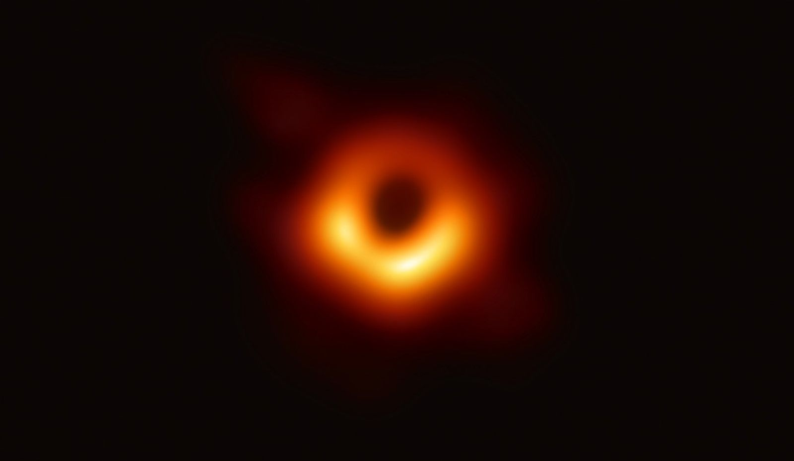

IMAGE: White Dwarf Stars | IMAGE CREDIT: NASA and H. Richer (University of British Columbia)
IMAGE: A Neutron Star | IMAGE CREDIT: NASA, STScI, Ralf Crawford (STScI)
IMAGE: The First Image of a Black Hole | IMAGE CREDIT: Event Horizon Telescope Collaboration
IMAGE: A theoretical Black Dwarf | IMAGE CREDIT: Baperookamo
IMAGE: White Dwarf Stars | IMAGE CREDIT: NASA and H. Richer (University of British Columbia)
White DwarfA leftover core from a red giant. After a red giant sheds it's outer layers completely, it's left with just a core. A white dwarf is that glowing core, continuously cooling. down.
IMAGE: A Neutron Star | IMAGE CREDIT: NASA, STScI, Ralf Crawford (STScI)
Neutron StarIncredibly dense remnants of nmassive supergiant stars that have collapsed after a supernova explosion.
IMAGE: The First Image of a Black Hole | IMAGE CREDIT: Event Horizon Telescope Collaboration
Black HoleA pit of endless gravitational pull, a place where light can never escape.
IMAGE: A theoretical Black Dwarf | IMAGE CREDIT: Baperookamo
Black DwarfA theoretical star that depicts life of a white dwarf once it completely cools off. These stars haven't appeared yet, given that the universe isn't old enough to have them. However, the theory itself helps explains the end for most stars.